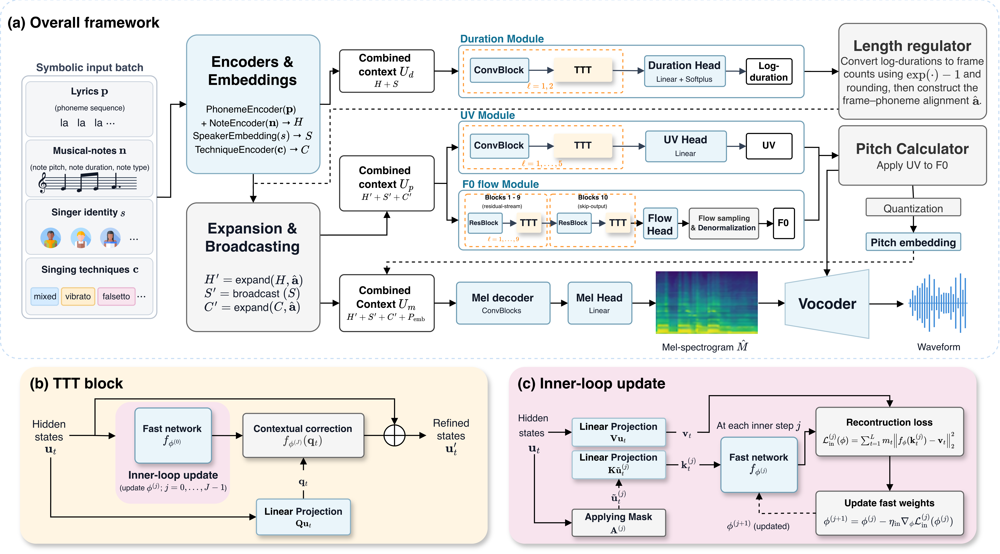

GT
TechSinger
TTT-SVSPROPOSED
Fine-grained singing voice synthesis (SVS) requires duration, pitch, and voicing modules to account for distinct contexts associated with multiple singing techniques. We propose TTT-SVS, a test-time training framework that constructs and coordinates module-specific contexts within a pretrained TechSinger backbone. An inner loop forms context through self-supervised adaptation, while a supervised outer loop jointly coordinates the modules using the backbone's SVS losses. Specifically, TTT blocks project hidden features into queries, keys, and values and adapt fast networks to reconstruct values from keys. The updated weights encode context that queries retrieve to refine module features. At test time, only the fast weights are updated through the inner loop, enabling adaptation without reference recordings or acoustic annotations. Experiments show that TTT-SVS achieves the best synthesis quality and controllability among the evaluated models.

Compare ground-truth recordings with the TechSinger backbone and TTT-SVS outputs.